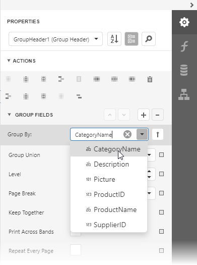
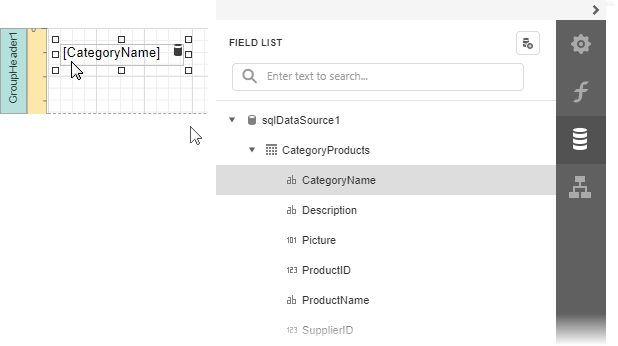
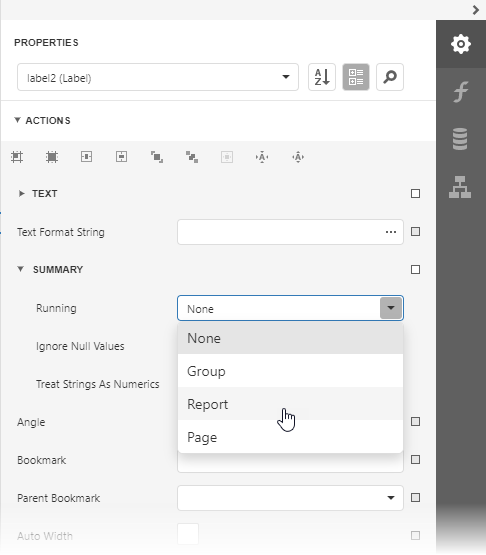
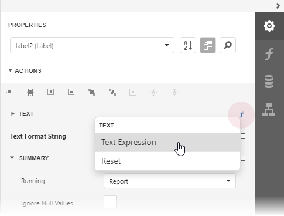
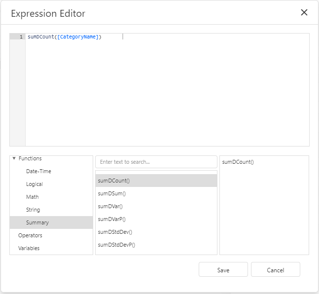
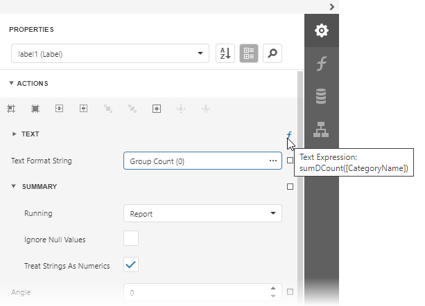
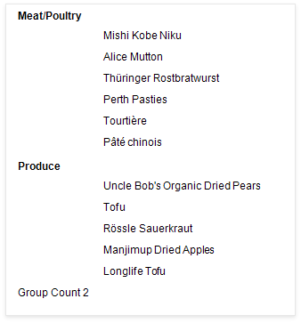

Count the Number of Groups in a Report
This document describes how to count the number of groups in a report.
Insert the Group Header band, select the Group Fields section in the Group Header Tasks category and add a new group field to group the report's data by the required field.

Switch to the Field List and drop the group field onto the created Group Header.

Drop a label onto the Report Footer, expand the Summary section in the Label Tasks category and set the Running property to Report.

Click the Text property marker to invoke the menu. Select Text Expression to invoke the Expression Editor.

In the Expression Editor select the sumDCount summary function in the Functions | Summary section:
sumDCount([CategoryName])
Use the Text Format String property to format the summary's value.

Switch to Print Preview and see the group count in the report footer:
